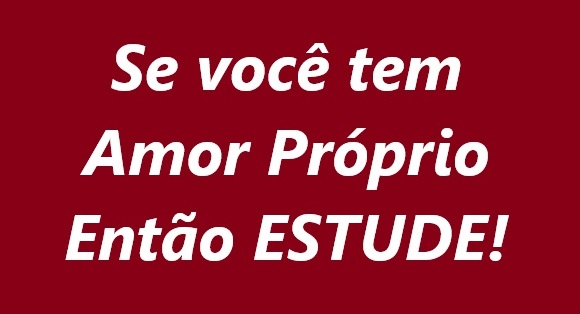
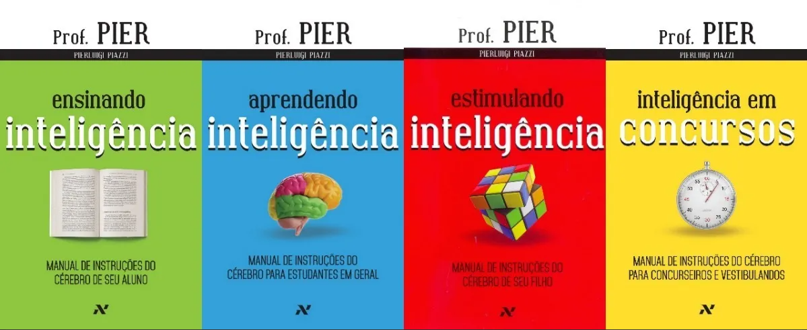
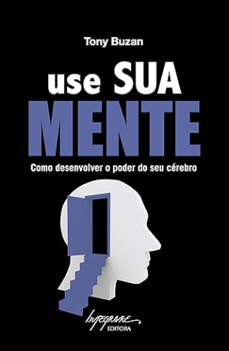
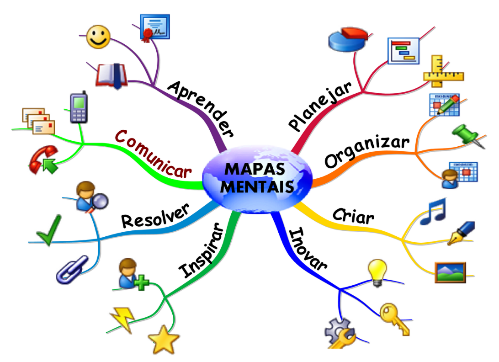
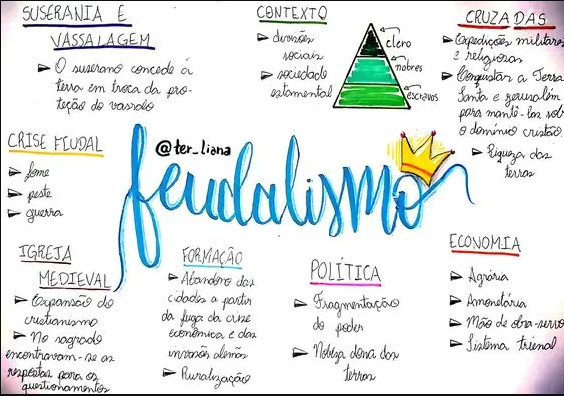
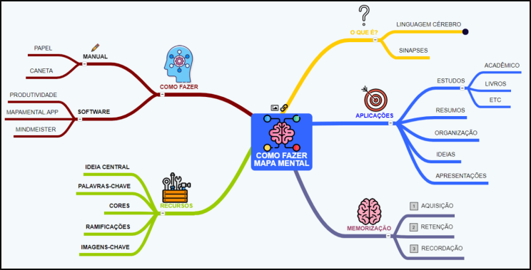

COMO ESTUDAR
Como estudar segundo o professor Pierluigi Piazzi "Pier Luigi"

Quem foi o professor Pier?
Pierluigi Piazzi, conhecido como Professor Pier (1943–2015), foi um renomado professor ítalo-brasileiro, palestrante e autor, famoso por revolucionar técnicas de estudo e aprendizagem no Brasil. Com vasta experiência em cursinhos pré-vestibulares, ele defendeu a ideia de que a inteligência se desenvolve com o hábito de estudo ativo ("aula dada, aula estudada") e criticou o modelo educacional passivo.
O Prof. Pier viajou por todo o Brasil, focando na importância da neurociência na aprendizagem e na distinção entre aprender (um processo ativo) e ser ensinado (passivo).
Papel e caneta na mão! Em muitos de seus vídeos na internet, vemos o professor Luigi defendendo a tese de que, se você apenas estudar, mas não anotar à mão, você não vai compreender — e muito menos lembrar — do que está estudando.
Aqui estão os pontos principais sobre o Professor Pier:
- Filosofia de Estudo: Sua famosa metodologia, baseada na frase "Aula assistida hoje é aula estudada hoje", incentivava o estudo diário e solitário para transformar alunos em estudantes.
- Educação e Ficção Científica: Além de professor de física, formou-se em Química Industrial e foi um grande entusiasta e divulgador da ficção científica no Brasil, fundando a Editora Aleph.
- Carreira: Lecionou para mais de 100 mil estudantes e passou os últimos anos de vida ministrando palestras para pais, alunos e professores sobre neuroaprendizagem.
- Obras Principais: Escreveu a série de livros de sucesso "Aprendendo Inteligência", que ensina técnicas de memorização e melhoria do rendimento escolar.

Ambiente de estudos
Os melhores ambientes para estudar combinam silêncio, boa iluminação (preferencialmente natural) e organização para maximizar o foco, como bibliotecas, espaços do Sesc, institutos culturais e cantos silenciosos em casa. Alternar locais ajuda na retenção de informações, sendo útil variar entre espaços calmos e áreas públicas organizadas.
Ter uma mesa limpa e organizada, longe da televisão, evitar mexer no celular ou mantê-lo muito perto, para evitar distrações.
 Não se esqueça de manter uma boa postura para estudar
Não se esqueça de manter uma boa postura para estudar
Vale a regra da boa ergonomia no trabalho, baseada na NR-17, que visa adaptar o posto de trabalho ao colaborador para prevenir lesões e aumentar o conforto.
Em casa, evite estudar na cama, pois além da má postura - obviamente! - você logo cairá no sono, principalmente se estiver muito cansado(a).
Melhor horário para estudar
Um dos melhores horários para estudar é no meio da manhã (9h às 11h), pois o cérebro está descansado, com maior foco e menos distrações. Beneficia-se da luz natural. Geralmente o melhor momento para conteúdos difíceis.
Turma das 3 horas da madrugada
Estudar à Noite: Indicado para quem trabalha durante o dia. Embora haja mais cansaço, pode ser produtivo, desde que não atrapalhe o sono.
Ambiente e Descanso: 8 horas de sono são cruciais para a fixação do aprendizado. Mas sabemos que para a maioria esmagadora da população, que trabalha e ainda tem que estudar isso é impossível. Então é dica é consistência. Estudar nem que seja uma hora por dia. E tentar adaptar o seu corpo com o horário que você tem disponível para estudar. Por exemplo: Se você entra no trabalho depois do meio dia e tem um tempo livre na parte da manhã, então pode ir dormir por voltar das 3 horas da madrugada - pois a madrugada é muito mais silenciosa para estudar - e depois dormir até umas 9 horas da manhã, para dormir pelo menos por 6 horas. Isso para aqueles que não conseguem dormir nem acordar muito cedo. Np final, o melhor horário quem vai decidir é você mesmo.
Mais dicas de onde estudar e onde encontrar materiais/conteúdos para te ajudar nos estudos
Frequente uma bliblioteca pública; LEIA MUITOS LIVROS; frequente também, na medida do possível, bancas de jornais, sebos (onde os livros geralmente são bem mais baratos e há vários outros contéudos como gibis, DVDs e CDs) e livrarias. Para compreender o mundo a sua volta da maneira científica, leia livros técnicos que eram distribuidos no tempo da escola. Como por exemplo, livros de ciências, história do seu país e história geral, matemática, física, química, biologia, filosofia, estudos sobre culturas e religiões diferentes e até coisas que questionam as religiões, português (gramática e literatura), outros idiomas como o inglês (essencial hoje em dia se voce quiser ser uma pessoa inteligente) e etc.
Dicas de videos para se motivar ou para não deixar os seus estudos não ficarem tão chatos. (Kdrama motivation, lofi study). Músicas relaxantes e de preferência que sejam em um idioma em que você não é fluente, para que a letra da música não interfira na sua atenção.
Use tudo ao seu favor. Desde bibliotecas públicas, à tecnologia como a IA e os mais diversos videos e sites pagos ou gratuitos. Conteúdo gratuito no YouTube também não falta. E há plataformas pagas para praticamente tudo hoje em dia, como a Udemy. Mas vale investir em procurar cursos gratuítos, na medida do possível, ainda mais se você não é herdeiro!
Técnicas de estudos pelo livro: Use Sua Mente - de Tony Buzan
"Não observamos nenhuma limitação no poder do cérebro - ele é ilimitado".
Livro: Use sua mente, de Tony Buzan.

Memória e Entendimento
Todas as palavras são entendidas; somente algumas são recordadas.
Conforme o tempo passa, a memorização do material tende a ficar progressivamente pior, a menos que se dê descansos adequados à mente.
Nas primeiras 24 horas de um perído de aprendizado de uma hora, pelo menos 80% da informação aprendida é perdida.
Memória - Teoria e Técnicas de Revisão -
Se uma revisão for organizada adequadamente, pode-se manter o nível de memorização no ponto alto atingido no final do perído de aprendizagem. Para isso, deve-se seguir um programa-padrão de revisão:
- 1- Cada revisão deve ser feita imediatamente antes da taxa de memorização cair.
- 2- Um dia, quando deve ocorrer a próxima revisão, dessa vez por um período de 2 a 4 minutos.
- 3- Uma semana, quando uma outra revisão de 2 minutos pode ser feita, e, após cerca de...
- 4- Um mês, faz-se mais uma revisão.
A primeira revisão deve ocorrer aproximadamente 10 minutos depois do perído de aprendizado de uma hora, e deve durar 5 minutos.
Isso vai manter alto nível de memorização por aproximadamente...
Após isso, a memorização será mantida por aproximadamente...
Depois desse tempo, o conhecimento será armazenado na memória de longo prazo.
Isso significa que tal conteúdo será tão familiar quanto o número de seu telefone.
A primeira revisão, especialmente se você tiver feito anotações, deve ser a mais completa possível, inclusive fazendo anotações; o que pode signifcar jogar fora as anotações originais e substituí-las por uma cópia revisada.
A segunda, terceira e quarta revisões devem ocorrer da seguinte maneira: sem consultar as anotações, anote (ou faça um Mapa Mental) tudo o que você lembrar. Confira o que você escrevu com as anotações anteriores e adicione ou corrija o que lembrou. Todas as anotações devem estar em forma de Mapas Mentais.
🧠 O que é um Mapa Mental? Desvendando essa Poderosa Ferramenta 🧠
Já se sentiu sobrecarregado com tanta informação? Ou teve dificuldade para organizar as ideias para um projeto, um estudo ou uma reunião? Se a resposta for sim, o Mapa Mental é a ferramenta que você precisa conhecer.
Imagine uma forma de colocar seus pensamentos no papel de maneira tão natural quanto o seu cérebro funciona. É exatamente isso que um Mapa Mental faz.
Em termos simples, um Mapa Mental é um diagrama usado para organizar informações de forma visual. Em vez de listar tópicos em linhas retas e monótonas (como em um texto comum), ele parte de uma ideia central e dela ramifica conceitos relacionados, como os galhos de uma árvore.
A Estrutura de um Mapa Mental:
- Ideia Central: O ponto de partida, o tema principal. Fica sempre no centro do diagrama, geralmente representado por uma imagem ou palavra-chave.
- Ramos (ou Galhos): Linhas curvas e orgânicas que partem do centro. Cada ramo principal representa uma categoria ou ideia-chave relacionada ao tema central.
- Palavras-chave e Imagens: Em cada ramo, usamos palavras-chave (e não frases longas) e imagens, pois o cérebro processa e memoriza esses elementos com muito mais facilidade.
- Cores e Destaques: As cores são fundamentais para criar categorias visuais, agrupar informações e estimular a criatividade e a memória.

Por que ele é tão eficaz?
A grande mágica do Mapa Mental está no fato de ele combinar os dois hemisférios do nosso cérebro:
- Hemisfério Esquerdo (Lógico): Trabalha com as palavras, a hierarquia, a sequência e a análise das informações.
- Hemisfério Direito (Criativo): É ativado pelas cores, imagens, a imaginação e a visão do todo.
Ao unir a lógica com a criatividade, o Mapa Mental não é apenas uma forma de organizar o que você já sabe, mas também uma poderosa ferramenta para gerar novas ideias e ver conexões que antes passavam despercebidas.
Para que serve um Mapa Mental? (Os Usos Práticos)
A versatilidade do Mapa Mental é um de seus maiores pontos fortes. Ele pode ser aplicado em diversas áreas da sua vida. Veja alguns exemplos:
📚 Nos Estudos:
- Resumir Matérias: Em vez de resumos enormes, crie um mapa com os conceitos principais de uma aula ou capítulo. Isso facilita a revisão e a memorização para provas e vestibulares.
- Planejar Redações: Use o mapa para estruturar seus argumentos, organizar a introdução, o desenvolvimento e a conclusão de forma clara e lógica.
- Aprender Idiomas: Agrupe vocabulário por temas (comida, viagens, família) conectado a imagens e cores.
💼 No Trabalho:
- Brainstorming de Projetos: É a ferramenta ideal para uma chuva de ideias. Coloque o problema ou objetivo no centro e deixe as soluções e possibilidades fluírem nos ramos.
- Planejamento Estratégico: Defina a visão da empresa no centro e crie ramos para as metas, os recursos necessários, os prazos e as equipes envolvidas.
- Organizar Reuniões: Prepare a pauta visualmente, garantindo que todos os tópicos importantes sejam cobertos de forma dinâmica.
- Fazer Apresentações: Use o mapa como seu guia, tornando a apresentação mais fluida e menos dependente de slides engessados.
🌱 Na Vida Pessoal:
- Organizar Metas e Sonhos: Visualize seus objetivos de curto, médio e longo prazo, e os passos necessários para alcançá-los.
- Planejar Viagens: Centralize o destino e crie ramos para o roteiro, hospedagem, o que levar, pontos turísticos e orçamento.
- Tomar Decisões: Coloque a decisão a ser tomada no centro e crie ramos para os prós e contras de cada opção, ajudando a clarear o pensamento.

Como criar seu próprio Mapa Mental?
Você não precisa ser um artista. O importante é o processo de pensar e organizar.
- Comece com uma folha em branco na horizontal. Isso dá mais espaço para os ramos se expandirem.
- Desenhe a imagem do seu tema central. Pode ser um desenho simples ou uma palavra escrita de forma destacada.
- Adicione os ramos principais. Use cores diferentes para cada um. Escreva uma palavra-chave sobre cada ramo.
- Explore os sub-ramos. A partir das ideias principais, crie novos galhos com detalhes, exemplos e informações complementares.
- Use imagens e símbolos. Sempre que possível, substitua palavras por pequenos desenhos, pois o cérebro fixa melhor a informação visual.
- Divirta-se!Quanto mais colorido, pessoal e criativo for seu mapa, mais ele será seu e mais fácil será de lembrar.

Em resumo, o Mapa Mental é mais do que um simples desenho. É um reflexo do seu pensamento, uma forma de dar asas à criatividade e, ao mesmo tempo, trazer ordem ao caos mental. Experimente e descubra como essa ferramenta pode transformar a maneira como você aprende, trabalha e planeja a sua vida!
Livro: Como ler livros => ao ler um livro você deve procurar conhecer antes, quem era (ou é) o autor. E em que época e contexto ele está inserido para ter escrito o que escreveu.
Se você precisa consertar um relógio, leve ele ao relojoeiro, não ao mecânico de automóveis! => Onde buscar a informação.